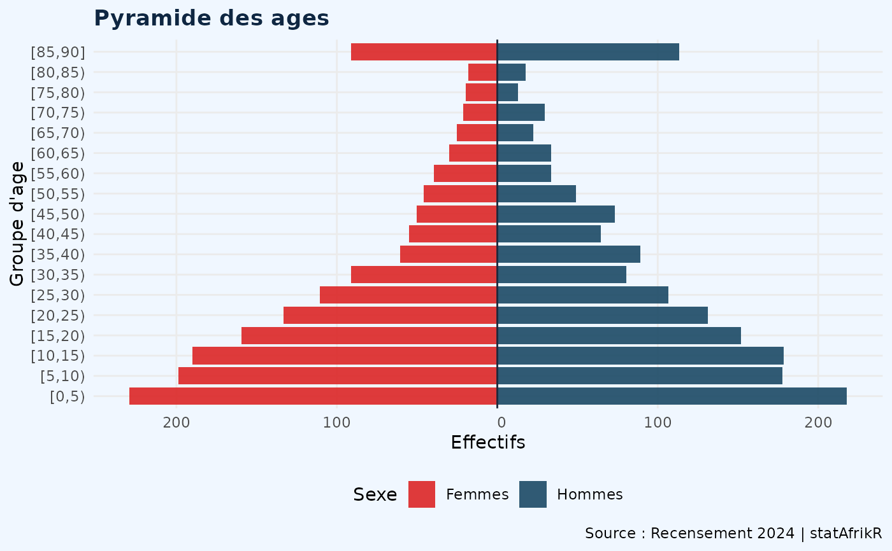

Produit une pyramide des ages institutionnelle au format ggplot2. Permet la superposition de deux annees pour l'analyse des tendances demographiques.
Usage
pyramide_age(
donnees,
var_age,
var_sexe,
code_homme = "H",
code_femme = "F",
poids = NULL,
groupes_age = 5L,
titre = NULL,
source = NULL
)Arguments
- donnees
data.frame – Donnees individuelles
- var_age
character – Variable age en annees
- var_sexe
character – Variable sexe
- code_homme
character ou numeric – Code hommes. Defaut : "H"
- code_femme
character ou numeric – Code femmes. Defaut : "F"
- poids
character ou NULL – Variable de ponderation. Defaut : NULL
- groupes_age
integer – Largeur des groupes. Defaut : 5L
- titre
character ou NULL – Titre. Defaut : NULL
- source
character ou NULL – Source. Defaut : NULL
Examples
set.seed(42)
n <- 3000
individus <- data.frame(
age = round(rexp(n, 1/30)),
sexe = sample(c("H","F"), n, TRUE),
poids = runif(n, 0.8, 1.3)
)
individus$age <- pmin(individus$age, 85)
pyramide_age(individus, "age", "sexe", poids="poids",
titre="Pyramide des ages", source="Recensement 2024")
